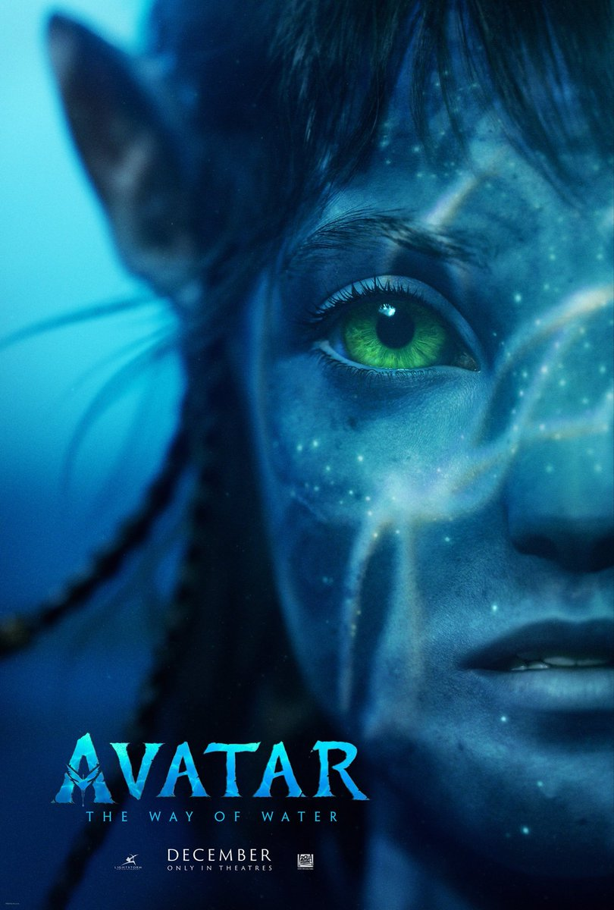

Movie Gallery

Black Panther
The Black Panther film series is a cycle of films set in the Marvel Cinematic Universe focusing on the fictitious Kingdom of Wakanda and its hero/king Black Panther. It consists of two films so far in Black Panther and Black Panther: Wakanda Forever.Actor Chadwick Boseman originated the title character in Director: Ryan Coogler.....
Rating: 4.1

Moon Knight
Moon Knight is an American television miniseries created by Jeremy Slater for the streaming service Disney+, based on the Marvel Comics featuring the character of the same name. It is the sixth television series in the Marvel Cinematic Universe (MCU) to be produced by Marvel Studios, sharing continuity with the films of the franchise.
Rating: 3.1

Avatar
The Way of Water is a 2022 American epic science fiction film directed and produced by James Cameron. He co-wrote the screenplay with Rick Jaffa and Amanda Silver from a story the trio wrote with Josh Friedman and Shane Salerno. Distributed by 20th Century Studios, it is the sequel to Avatar (2009) and the second installment in the Avatar film series.
Rating: 3.9